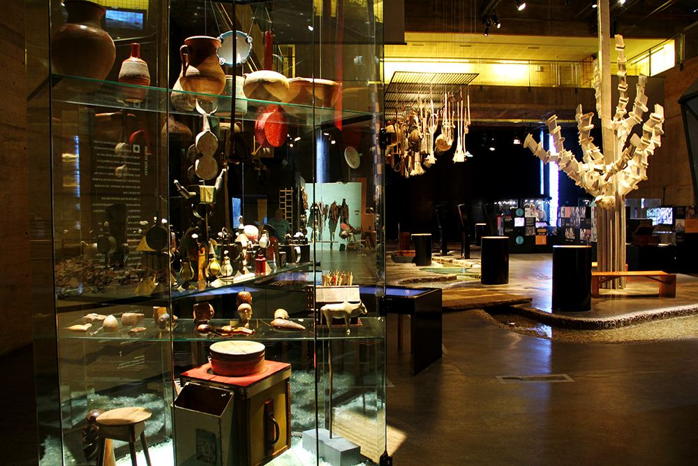
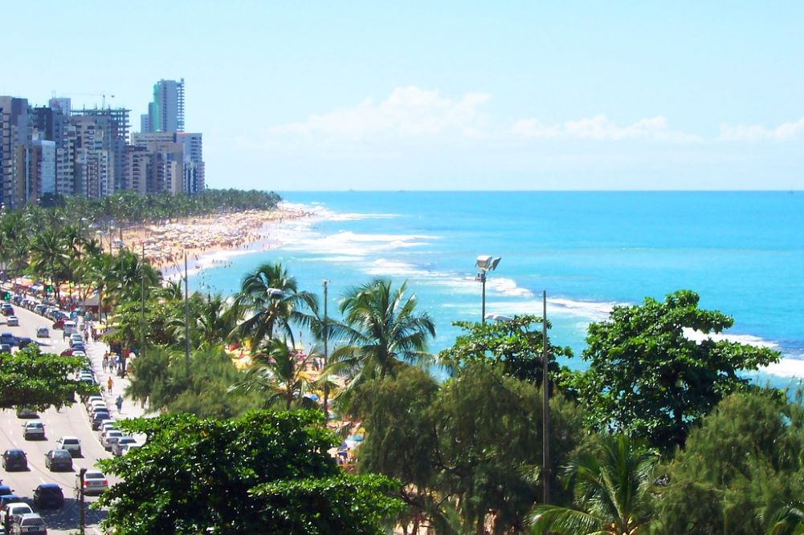

Pontos turísticos
Aqui estão informações sobre outros dois pontos turísticos do Recife:
"Museu do Cais"

"Praia de Boa Viajem"

Para saber mais sobre cada um desses pontos turísticos, basta clicar no link.
-
Museu do Cais do sertão